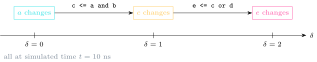

Model
A simulation cycle at time :
- update: apply all transactions scheduled for ; a signal whose value changes has an event;
- evaluate: run every process (and concurrent assignment) sensitive to a signal with an event; their assignments without
afterare scheduled for ; - if anything is scheduled for , repeat at the next delta; otherwise advance to the next time with a scheduled transaction.
Simulated time is the pair , ordered lexicographically;  steps take no simulated time.
steps take no simulated time.
Derivation
For c < a and b; e <= c or d;= with a rising from 0 to 1 at time 10 ns while b'1':
- :
achanges;c <a and b= is evaluated and schedulesc'1' at ; - :
cchanges;e <c or d= runs and schedulese'1' at ; - :
echanges; nothing is sensitive to it: time advances.
In a waveform viewer c and e both change "at 10 ns", but e is after c.
Picture

 updates
updates  one delta later and
one delta later and  one delta after that, all without advancing time.
one delta after that, all without advancing time.Intuition
Delta cycles are the simulator's way of saying "after, but not later": they keep causality in a world where gates have no delay.
Pitfall
A combinational loop with zero delay (x < not x;=) never runs out of delta cycles: the simulator stops with an iteration-limit error at a fixed simulated time.